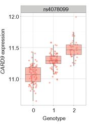
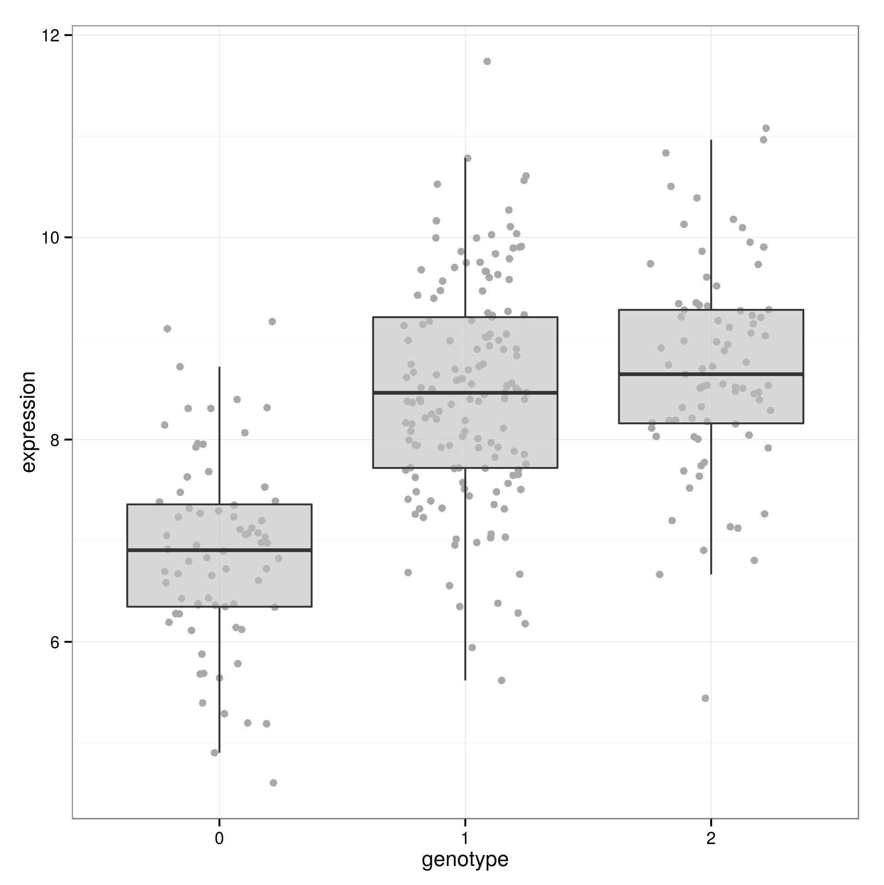

Introduction to eQTL analysis
Peter Humburg
Overview
What are eQTL?
Detecting eQTL – A simple model
How do we know whether a locus is associated with the expression of a gene?

- Any given locus contains multiple SNPs.
- Can determine genotypes for these SNPs in a (large) number of individuals.
- Measure gene expression for genes of interest.
- Assess the evidence that expression varies with genotype.
How do we know whether a locus is associated with the expression of a gene?
| sample | snp_1 | snp_2 | snp_3 | … |
|---|---|---|---|---|
| sample 1 | AA | AA | AB | … |
| sample 2 | AB | AB | AA | … |
| sample 3 | AB | BB | AB | … |
| … | … | … | … | … |
- Any given locus contains multiple SNPs.
- Can determine genotypes for these SNPs in a (large) number of individuals.
- Measure gene expression for genes of interest.
- Assess the evidence that expression varies with genotype.
How do we know whether a locus is associated with the expression of a gene?
| sample | gene_1 | gene_2 | gene_3 | … |
|---|---|---|---|---|
| sample 1 | 7.3 | 12.8 | 6.5 | … |
| sample 2 | 10.9 | 9.6 | 8.8 | … |
| sample 3 | 9.5 | 10.7 | 15.1 | … |
| … | … | … | … | … |
- Any given locus contains multiple SNPs.
- Can determine genotypes for these SNPs in a (large) number of individuals.
- Measure gene expression for genes of interest.
- Assess the evidence that expression varies with genotype.
How do we know whether a locus is associated with the expression of a gene?

- Any given locus contains multiple SNPs.
- Can determine genotypes for these SNPs in a (large) number of individuals.
- Measure gene expression for genes of interest.
- Assess the evidence that expression varies with genotype.
Linear additive model
Different alleles of a SNP may exhibit a dosage effect.
- Using the AA genotype as baseline, each copy of the B allele changes expression by a fixed amount.
- Implies a linear relationship between the mean gene expression and the number of B alleles.
- Estimating the change in expression due to the B allele to quantify the SNP’s contribution to gene expression.
Linear regression
\[Y = \beta_0 + \beta X + \varepsilon\]
- Y
- Response variable (here: vector of expression values for gene of interest).
- X
- Explanatory variable (here: vector of genotypes (coded as 0, 1, 2) for the SNP under consideration).
Linear regression
\[Y = \beta_0 + \beta X + \varepsilon\]
- \(\beta_0\)
- Intercept (here: mean expression for AA genotype).
- \(\beta\)
- Regression coefficient; the effect of X on the mean of Y (here: change in mean gene expression for each copy of the B allele).
- \(\varepsilon\)
- Residuals; the difference between observed values of \(Y\) and the estimated mean of \(Y|X\)
Linear regression – Assumptions
Residuals are
- independent
- normally distributed with mean 0 and constant variance
It is implied that
- Values of \(Y\) for each value of \(X\) are normally distributed.
- There is a linear relationship between \(X\) and \(Y\).
Linear regression – Robustness
Independence of residuals
Can produce misleading results.
What could cause this?
Linear regression – Robustness
Constant variance of residuals (homoskedacity)
Violation of this assumption will lead to incorrect p-values and confidence intervals.
Linear regression – Robustness
Normality
- Estimates and their confidence intervals and p-values are fairly robust.
- Prediction can become problematic (but we are not interested in that here).
Linear regression – Robustness
Linearity
If the true relationship between \(Y\) and \(X\) is non-linear conclusions may be misleading.
When might this occur with eQTL data?Linear regression – Robustness
Linearity
If the true relationship between \(Y\) and \(X\) is non-linear conclusions may be misleading.
When might this occur with eQTL data?

Hands-on: Simple linear regression
Setup
Make sure you have the latest version of the Docker image
docker pull humburg/eqtl-introStart the RStudio server
docker run -p 8787:8787 humburg/eqtl-intro- On Mac and Windows determine the servers IP address with
boot2docker ip. On Linux use localhost. - Access the RStudio interface at http://yourip:8787.
- Username: rstudio
- Password: rstudio
Data
- Genotypes
- /data/simulated/sim_genotypes.tab
- Gene expression
- /data/simulated/expression1.tab
Warm-up
- Load the data into R.
- How is the data formatted?
- Determine minor allele frequencies.
Plotting the data
- Choose a SNP/gene pair (snp_1 / gene_1, snp_2 / gene_2, …)
- Create a plot showing gene expression by genotype for this pair.